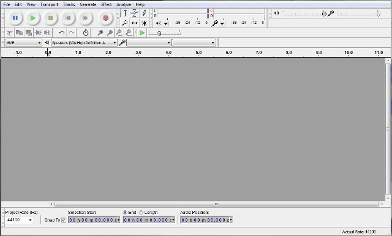
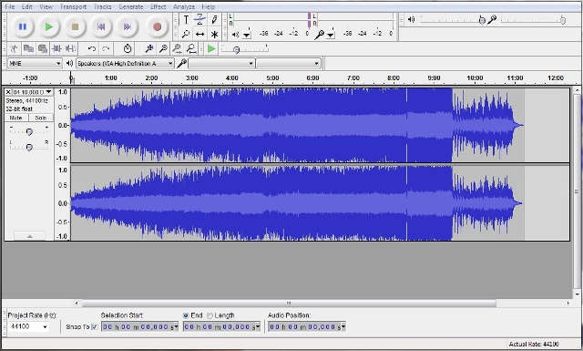
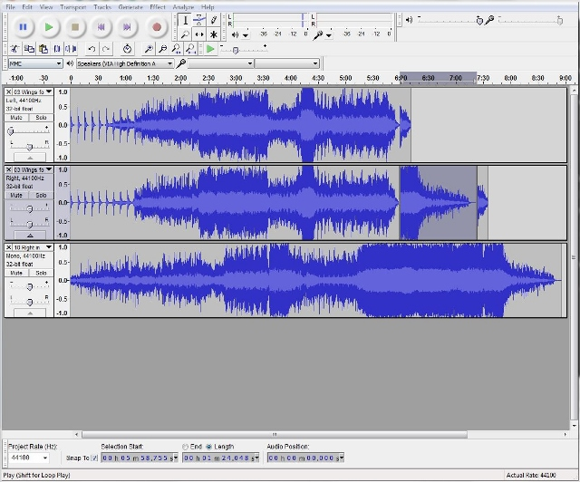
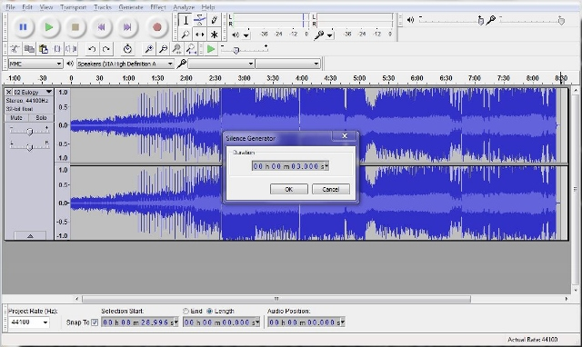

UTCS Lean In: Project Illuminate
Audacity Tutorial
Audacity is a free, open-source audio editing software. Groups that are setting their lights to music may use any editing software to which they have access that they wish, but we recommend this as a powerful, free tool. Note that this tutorial is far from comprehensive and is geared toward getting your projects ready. For the curious and motivated, the manual is here.
Getting started
The Audacity software has already been installed on the machines you will be using. To open it, go to the Applications Menu in the top left-hand corner of your screen. Click Run Program…, type audacity into the search box, and press Enter. When presented with any windows or options, go with the default selection until you reach the main window (pictured below).
Importing a track
To get started editing, you must first import the audio file. Go to File > Import > Audio… and navigate to and select your track. If at all possible, use mp3 files to ensure compatibility with the software. Not all audio encodings are supported (e.g. WMA). When it is finished importing, you should see something like the image below.
You will likely have two identical graphs, as above. Fear not, you are editing one track—shown are the waveform displays of the left and right channels, or what comes out of your left vs. your right earbuds, in a stereo track. Mono tracks will have one waveform display.
Navigation
There are a few things you'll need to do in order to set your lights to music. The program that you write will allow you to time your lights precisely. This precision will prove useful when editing your tracks. Notice you may click anywhere along the waveform's length and hit the raised, green play button (pictured below) to start listening from that point through the end of the track. This is different from the other flat, green play button visible in the program's toolbar.
Pressing this button again will start the music over from the point you selected, pressing Stop will stop playback and return you to the point you selected, and pressing Pause will stop playback and maintain your current position in the track. You may also click and drag along its length, and pressing Play will play only your highlighted selection.
More useful for your purposes is the tool toward the bottom of the window (pictured below). This performs the same selective functions, but with greater precision. You may set a timestamp for the beginning of your selection and then either mark the radio button labeled End, signifying the end timestamp of your selection, or check the radio button labeled Length, and give it the length you want your selection to be, instead. Finally, Audio Position keeps a running timestamp of where you are in the track.

Editing
You may find you want to join separate parts of a track. You can copy/paste selections (make selection > Ctrl+c > click where it should go > Ctrl+v). Note that it will only let you do this if the track is not playing or paused; hit the yellow stop button and proceed. For those of you waffling about which of your favorite songs you want to use, you should know that you can have it all. Multiple tracks can be open at the same time, and you can copy/paste between the two, as below.
Stereo tracks (those with a left and a right channel) will automatically paste the selection to both channels, so you don't have to worry about synchronizing that operation.
One more operation that you may find useful is adding a specific length of silence to your track.
Click on the waveform display where you wish to insert the silence. If you wish to add it to the end, click Transport > Skip to End (this is more precise than trying to click the exact ending timestamp). Pressing the End button on your keyboard serves this same function, and Home sets your cursor to the beginning. Position set, click Generate > Silence… and choose the length of silence you wish to insert. Hit OK.
Finished product
Once you have settled on the audio you will use with your light display, you need to export it to its own file. Click File > Export Audio… and save it to your USB. Choose what kind of audio file you want to save (e.g., mp3). It is probably also wise to save a copy to the hard drive (e.g., to your Music folder).
If for some reason you are unable to select the mp3 option, choose Ogg Vorbis (fairly analogous to mp3, just more special sounding) and move on to bigger and better things, like exporting your track.
The next window you see should be a metadata editor. Metadata just gives users more information about the file. Data about data, if you will. Meta! You can leave this alone. Don't worry about any of the buttons except for OK. Press that one.
The export itself should take only a few seconds, and voila! You have your track.